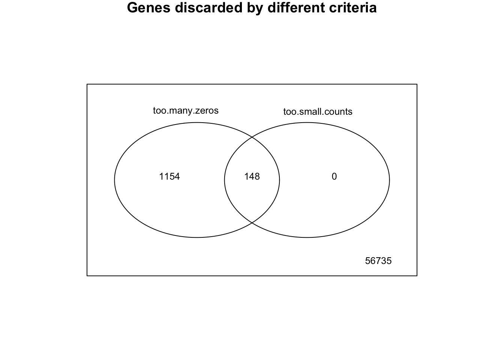

DU-Bii Study cases - TCGA Acute Myeloid Leukemia study
DUBii 2019
Jacques van Helden
2019-03-02
Parameters for this analysis
## Define parameters for the analysis
parameters <- list(
## Select a TCGA project
# study = "BIC",
# project.name = "Breast Invasive Carcinoma",
study = "AML",
project.name = "Acute Myeloid Leukemia",
epsilon = 0.1,
gene.filter.min.count = 10,
gene.filter.percent.zeros = 95,
gzip.output.files = TRUE,
alpha = 0.01, # Significance threshold, applied on the adjusted P-value
top.genes = 1000, # export a separate file with top genes for the practical on clustering
lambda = 0.5, # Lambda parameter for the estimation of H0/H1 proportions following Storey Tibshirani (2003)
p.adjust.method = "fdr",
run.DESeq2 = TRUE, # I set this parameter because DESeq2 takes a huge time to run (although finally succeeds)
run.edgeR = TRUE
)
## Select relevant columns from the pheno table depending on project acronyum
if (parameters$study == "BIC") {
pheno.columns <- c(
ER = "xml_breast_carcinoma_estrogen_receptor_status",
PR = "xml_breast_carcinoma_progesterone_receptor_status",
HER2 = "xml_lab_proc_her2_neu_immunohistochemistry_receptor_status")
valid.pheno.values <- c("Negative", "Positive")
} else if (parameters$study == "AML") {
pheno.columns <- c(
risk.category = "xml_acute_myeloid_leukemia_calgb_cytogenetics_risk_category")
valid.pheno.values <- c("Poor", "Favorable", "Intermediate/Normal")
} else {
stop("Invalid project acronym: ", parameters$study)
}
kable(t(data.frame(parameters)), col.names = "Parameter value")| Parameter value | |
|---|---|
| study | AML |
| project.name | Acute Myeloid Leukemia |
| epsilon | 0.1 |
| gene.filter.min.count | 10 |
| gene.filter.percent.zeros | 95 |
| gzip.output.files | TRUE |
| alpha | 0.01 |
| top.genes | 1000 |
| lambda | 0.5 |
| p.adjust.method | fdr |
| run.DESeq2 | TRUE |
| run.edgeR | TRUE |
message("Selected columns from pheno table:\n\t",
paste(collapse = "\n\t", pheno.columns))
kable(pheno.columns, col.names = "Pheno column", caption = "Columns from the phenoTable")| Pheno column | |
|---|---|
| risk.category | xml_acute_myeloid_leukemia_calgb_cytogenetics_risk_category |
message("Valid values for hte selected pheno columns:\n\t",
paste(collapse = "\n\t", valid.pheno.values))
kable(valid.pheno.values, col.names = "Accepted values", caption = "Valid values for the pheno column(s)")| Accepted values |
|---|
| Poor |
| Favorable |
| Intermediate/Normal |
How to reproduce this analysis?
This report was generated with an R markdown file that enables to reproduce all the steps and the final results of the analyses, by executing the following steps.
Requirements
- RStudio
Procedure to reproduce the results
- Get a clone of the git repopsitory by running the following command in the terminal.
git clone git@github.com:DU-Bii/study-cases.git
In the downloaded clone, locate the folder containing this R mardkown file
study-cases/Homo_sapiens/TCGA_study-case/With RStudio, open the Rproj (Rstudio project) file
TCGA_study-case.Rproj. The simplest way to do this is to double-click on this Rproj file, which will open RStudio with the appropriate options (in particular, the working directory).sWithin RStudio, open the R markdown file
build_TCGA_study_case.Rmd, and run Knit.
Introduction
TO BE WRITTEN
Data source
TCGA TO BE WRITTEN
Recount2 (https://jhubiostatistics.shinyapps.io/recount/) is a database rasembling several thousands of human RNA-seq studies, that were all processed with a same workflow in order to ensure the consistency of the transcriptome measurements. Recount2 provides direct access to tables of raw counts per gene, exon or transcript.
Requirements
- Recount library: https://bioconductor.org/packages/release/bioc/html/recount.html
# Install BiocManager if required
if (!requireNamespace("BiocManager", quietly = TRUE))
install.packages("BiocManager")
# Install recount if required
if (!require(recount)) {
BiocManager::install("recount", version = "3.8")
require(recount)
}
# BiocManager::valid()Working directory
## Set the working directory
workdir <- "~/TCGA_study-cases/"
dir.create(workdir, recursive = TRUE, showWarnings = FALSE)
setwd(workdir)
message("\tSelected TCGA project\t", parameters$project.name, " (", parameters$study, ")")
export.dir <- file.path(workdir, "data", parameters$study)
message("\tExport directory\t", export.dir)
dir.create(export.dir, recursive = TRUE, showWarnings = FALSE)The downloaded and processed data will be saved in a working directory named TCGA_import in the user home folder (``r workdir). If required this directory is created automatically.
Data source
## Download the TCGA data from Recount2 database
## Set the recoutnID (to "TCGA")
recountID <- "TCGA"
# Specify the download directory
download.dir <- file.path(workdir, "downloads", recountID)
dir.create(download.dir, recursive = TRUE, showWarnings = FALSE)
## Data types to download
#download.types <- c("phenotype", "counts-gene", "rse-gene")
download.types <- c("rse-gene") # the rse-gene object contains both expression and pheno tables
localFiles <- c()
for (type in download.types) {
message("Recount data type: ", type)
## Get the URL of the recount file
## (its extension will depend on the data type)
recountURL <- download_study(
recountID,
outdir = download.dir,
type = type,
download = FALSE)
message("\trecountURLL: ", recountURL)
## Define the local file name
localFile <- file.path(download.dir, basename(recountURL))
message("\tlocalFile: ", localFile)
## Index local file for later use
localFiles[type] <- localFile
## Download the data only if required
if (!file.exists(localFile)) {
message("\tDowloading ", type, " from ReCount for study ", recountID)
url <- download_study(
recountID,
outdir = download.dir,
type = type)
} else {
message("\tfile already there: ", localFile)
}
}We downloaded the following file types from Recount2: rse-gene.
Data loading
## Load the RData memory image provided by Recount2, whcih contains the count table + pheno table
message("Loading TCGA counts")
system.time(load(localFiles["rse-gene"])) user system elapsed
28.651 1.978 30.821 ## Extract the pheno table from the rse-gene object
phenoTable <- colData(rse_gene) ## phenotype per run## Exctract subset of the TCGA data that corresponds to the selected study
message("Identifying valid samples for TCGA study ", parameters$project.name)
## Initialise a Boolean vector for valid samples
## We will then discard all samples that fail on some criterion
valid.samples <- rep(x = TRUE, times = nrow(phenoTable))
## Only keep samples from the selected TCGA study
project.samples <- phenoTable$gdc_cases.tissue_source_site.project == parameters$project.name
valid.samples[!project.samples] <- FALSE
message("\tNumber of project samples: ", sum(project.samples))
## Only keep project samples with valid markers (i.e. Negative or Positive), discard Undertermined, Equivocal and NA
message("Selecting samples",
"\n\tpheno columns\t", paste(collapse = ", ", pheno.columns),
"\n\tValid values:\t", paste(collapse = ", ", valid.pheno.values)
)
for (column in pheno.columns) {
# Discard samples having NA values in the selected pheno column
valid.samples[is.na(phenoTable[, column])] <- FALSE
# Discard samples having invalid values in the select pheno columns
valid.samples[!(phenoTable[, column] %in% valid.pheno.values)] <- FALSE
}
message("\tvalid samples: ", sum(valid.samples))
## Subset the expression data by selecting the valid samples
message("Extracting expression data for valid samples")
rse.valid.samples <- subset(rse_gene, select = valid.samples)
# dim(rse.valid.samples)
## Extract a pheno table for the subset
pheno <- colData(rse.valid.samples)
# dim(pheno.valid.samples)
## Extract the count table from the rse-gene object
message("Extracting counts per gene")
counts <- assay(rse.valid.samples)
# summary(counts[, 1:10])
# dim(counts)
message("Selected ", parameters$study, " dataset (project and valid markers)")
message("\tRead count table contains ", nrow(counts), " rows (genes) x ", ncol(counts), " columns (samples). ")
message("\tPheno table contains ", nrow(pheno), " rows (samples) x ", ncol(pheno), " columns (sample attributes). ")The full TCGA gene count table contains 125 samples (columns) and 58037 genes (rows).
kable(sort(table(phenoTable$gdc_cases.project.name),
decreasing = TRUE),
caption = "Number of samples per TGCA project. ",
col.names = c("Project","samples"))| Project | samples |
|---|---|
| Breast Invasive Carcinoma | 1246 |
| Kidney Renal Clear Cell Carcinoma | 616 |
| Lung Adenocarcinoma | 601 |
| Uterine Corpus Endometrial Carcinoma | 589 |
| Thyroid Carcinoma | 572 |
| Prostate Adenocarcinoma | 558 |
| Lung Squamous Cell Carcinoma | 555 |
| Head and Neck Squamous Cell Carcinoma | 548 |
| Colon Adenocarcinoma | 546 |
| Brain Lower Grade Glioma | 532 |
| Skin Cutaneous Melanoma | 473 |
| Stomach Adenocarcinoma | 453 |
| Bladder Urothelial Carcinoma | 433 |
| Ovarian Serous Cystadenocarcinoma | 430 |
| Liver Hepatocellular Carcinoma | 424 |
| Kidney Renal Papillary Cell Carcinoma | 323 |
| Cervical Squamous Cell Carcinoma and Endocervical Adenocarcinoma | 309 |
| Sarcoma | 265 |
| Esophageal Carcinoma | 198 |
| Pheochromocytoma and Paraganglioma | 187 |
| Pancreatic Adenocarcinoma | 183 |
| Rectum Adenocarcinoma | 177 |
| Glioblastoma Multiforme | 175 |
| Testicular Germ Cell Tumors | 156 |
| Acute Myeloid Leukemia | 126 |
| Thymoma | 122 |
| Kidney Chromophobe | 91 |
| Mesothelioma | 87 |
| Uveal Melanoma | 80 |
| Adrenocortical Carcinoma | 79 |
| Uterine Carcinosarcoma | 57 |
| Lymphoid Neoplasm Diffuse Large B-cell Lymphoma | 48 |
| Cholangiocarcinoma | 45 |
For the study case, we select the project 126, which contains 126 samples.
Class labels
The class of cancer is defined by combining three immunological markers:
- HER2,
- ER (estrogen receptor)
- Pr (progesterone receptor)
The tables below provide summaries of the values in the selected pheno columns.
pheno.values <- data.frame(phenoTable[project.samples, pheno.columns])
colnames(pheno.values) <- names(pheno.columns)
summary(as.data.frame(pheno.values)) risk.category
: 0
Favorable :25
Intermediate/Normal:70
Poor :30
NA's : 1 Remaining samples after having discarded invalid values.
valid.pheno <- data.frame(phenoTable[valid.samples, pheno.columns])
colnames(valid.pheno) <- names(pheno.columns)
summary(as.data.frame(valid.pheno)) risk.category
: 0
Favorable :25
Intermediate/Normal:70
Poor :30 We discard the samples for which any of the pheno values is undefined (NA), or does not match the values defined as valid (Poor, Favorable, Intermediate/Normal). In total, this leaves us with 125 samples.
We then assign a class label to each samplebased on the values in the selected pheno column(s).
if (parameters$study == "BIC") {
include_graphics(path = "images/breast_cancer_typology.png")
}if (parameters$study == "BIC") {
## Define sample classes based on the combination of 3 marker values
pheno$sample.class <- rep("Unclassified", length.out = nrow(pheno))
luminal.A <-
pheno[, pheno.columns["ER"]] == "Positive" &
pheno[, pheno.columns["PR"]] == "Positive" &
pheno[, pheno.columns["HER2"]] == "Negative"
pheno[luminal.A, "sample.class"] <- "Luminal.A"
luminal.B <-
pheno[, pheno.columns["ER"]] == "Positive" &
pheno[, pheno.columns["PR"]] == "Positive" &
pheno[, pheno.columns["HER2"]] == "Positive"
pheno[luminal.B, "sample.class"] <- "Luminal.B"
her2plus <-
pheno[, pheno.columns["ER"]] == "Negative" &
pheno[, pheno.columns["PR"]] == "Negative" &
pheno[, pheno.columns["HER2"]] == "Positive"
pheno[her2plus, "sample.class"] <- "HER2pos"
basal.like <-
pheno[, pheno.columns["ER"]] == "Negative" &
pheno[, pheno.columns["PR"]] == "Negative" &
pheno[, pheno.columns["HER2"]] == "Negative"
pheno[basal.like, "sample.class"] <- "Basal.like"
} else if (parameters$study == "AML") {
pheno$sample.class <- as.vector(pheno[, pheno.columns])
}
kable(sort(decreasing = TRUE, table(pheno$sample.class)),
useNA = "ifany",
caption = "Number of samples per class")| Var1 | Freq |
|---|---|
| Intermediate/Normal | 70 |
| Poor | 30 |
| Favorable | 25 |
## Get the identifiers of the selected samples
selected.sample.ids <- rownames(pheno)
# summary(selected.sample.ids %in% colnames(counts))
# summary(colnames(counts) %in% selected.sample.ids)Gene filtering
Percent zero counts
## Discard genes having zeros in at least 95% of samples
message("Applying threshold on the percent of non-zero counts per gene: ", parameters$gene.filter.percent.zeros, "%")
percent.zeros <- 100*apply(counts == 0, 1, sum) / ncol(counts)
hist(percent.zeros, breaks = 20, col = "#DDDDDD",
main = "Filter on the percentage of zero counts",
xlab = "Percent of samples", ylab = "Number of genes", las = 1)
arrows(x0 = parameters$gene.filter.percent.zeros,
y0 = 10000,
x1 = parameters$gene.filter.percent.zeros,
y1 = 6000,
col = "red", lwd = 2,
angle = 30, length = 0.1)
text(x = parameters$gene.filter.percent.zeros,
y = 10000,
labels = paste(sep = "", parameters$gene.filter.percent.zeros, "%"),
col = "red", pos = 3)Frequency of samples with zero counts per gene. Genes exceeding the thresold (red arrow) were filtered out.
Min counts per gene
We apply a filter on the mininmum count per gene in the following way.
- For each gene, we compute its maximal count value across all samples (max count per gene)
- On this value, we apply a lower threshold: it the maximal count per gene (across all samples) is lower than a user-specified threshold, this gene is discarded.
message("Applying filter on the min counts per gene")
max.per.gene <- apply(counts, 1, max)
summary(max.per.gene) Min. 1st Qu. Median Mean 3rd Qu. Max.
0 547 5168 226795 83150 372052787 # View(summary(min.count))
h <- hist(log2(max.per.gene + parameters$epsilon), breaks = 100, col = "#BBBBFF",
xlab = "log2(max count per gene)",
ylab = "Number of genes", las = 1,
main = "Filtering on min count per gene")
h.max <- max(h$counts)
arrows(x0 = log2(parameters$gene.filter.min.count),
y0 = h.max * 0.5,
x1 = log2(parameters$gene.filter.min.count),
y1 = h.max * 0.3,
col = "red", lwd = 2,
angle = 30, length = 0.1)
arrows(x0 = log2(parameters$epsilon),
y0 = h.max * 0.5,
x1 = log2(parameters$gene.filter.min.count),
y1 = h.max * 0.5,
col = "red", lwd = 4, code = 0,
angle = 30, length = 0.1)
text(x = log2(parameters$gene.filter.min.count),
y = h.max * 0.5,
labels = paste(sep = "", "log2(",
parameters$gene.filter.min.count,
") = ", signif(digits = 3, log2(parameters$gene.filter.min.count))),
col = "red", pos = 3)Distribution of min counts per gene. Genes below the thresold (red arrow) are filtered out.
## Discarding genes that did not pass the filters
discarded.genes <- data.frame(
too.many.zeros = percent.zeros > parameters$gene.filter.percent.zeros,
too.small.counts = max.per.gene < parameters$gene.filter.min.count
)
## Draw a venn diagram indicating the number of genes
## discarded by the different criteria.
venn.counts <- vennCounts(discarded.genes)
vennDiagram(venn.counts, cex = 0.8,
main = "Genes discarded by different criteria")
## Genes passing the filters are those for which
## all the discarding criteria are FALSE,
## i.e. the sum of the row is 0
filtered.genes <- apply(discarded.genes, 1, sum) == 0
## Select a matrix with the filtered genes,
## i.e. those not discarded by any criterion
filtered.counts <- counts[filtered.genes, ]
message("Filtered counts contain ",
nrow(filtered.counts), " rows x ",
ncol(filtered.counts), " columns")We discard “undetected” genes, i.e. those having zero counts in at least 95 percent of the samples, or those with a maximal count inferior to 10. This led us to keep 56735 genes.
Normalization of the counts per gene
We use DESeq2 function estimateSizeFactors() to estimate the library-wise size factors, which will be used to standardize the counts.
We then apply a log2 transformation in order to normalize these standardized counts.
## Use the DESeqDataSetFromMatrix to create a DESeqDataSet object
message("Creating DESeq2 dataset")
dds <- DESeqDataSetFromMatrix(
countData = as.data.frame(filtered.counts),
colData = DataFrame(sample.class = as.factor(pheno[, "sample.class"])),
design = ~ sample.class)
## Normalizing using the method for an object of class"CountDataSet"
message("Normalizing raw counts with DESeq2")
dds.norm <- estimateSizeFactors(dds)
# sizeFactors(dds.norm)
## Compute log2-transformed counts from the normalized counts
counts.norm <- counts(dds.norm, normalized = TRUE) + parameters$epsilon
# dim(counts.norm)
counts.log2.norm <- log2(counts.norm)
# dim(counts.log2.norm)
## Compute quick estimation of dispersion trend + apply variance-stabilizing transformation
message("\tDESeq2::vst()\tQuickly estimate dispersion trend and apply variance-stabilizing transformation")
system.time(dds.vst <- vst(dds)) user system elapsed
3.484 0.545 4.037 ## DO NOT compute regularized log transformation (takes ages)
# message("\tDESeq2::rlog()\tComputing regularized log transformation")
# system.time(rld <- rlog(dds)) ## Takes a long time with large number of samplesmessage("Normalized count histogram")
log2.count.breaks <- seq(
from = log2(parameters$epsilon),
to = 32,
by = 0.4)
par(mfrow = c(2, 1))
hist(unlist(log2(unlist(counts + parameters$epsilon))), main = "Log2(raw counts)",
xlab = "log2(raw counts + epsilon)",
ylab = "Number of measures",
breaks = log2.count.breaks,
col = "#FFDDBB")
hist(unlist(counts.log2.norm), main = "Normalized counts",
xlab = "log2(standardized counts)",
ylab = "Number of measures",
breaks = log2.count.breaks,
col = "#DDFFBB")
Histogram of all counts. (a) Before filtering and standardization. Distribution of log2(raw counts + epsilon). The epsilon is added to avoid -Inf values for log2-transformed zeros. (b) Normalised counts. Normalization consists in scaling counts in order to ensure library size standardization, followed by a log2 transformation.
par(mfrow = c(1, 1))PCA of the samples
## Assign a color to each sample according to its class
message("Assigning colors to samples according to their class")
sample.classes <- pheno$sample.class
classes <- unique(sample.classes)
class.colors <- rainbow(n = length(classes))
names(class.colors) <- classes
sample.colors <- class.colors[sample.classes]
## Manual plot of PC1 and PC2
message("Computing principal components")
dds.prcomp <- prcomp(counts.log2.norm)
par(mfrow = c(2,2))
plot(dds.prcomp$rotation[,1], dds.prcomp$rotation[,2],
col = sample.colors,
main = "Principal components - PC1/PC2",
xlab = "PC1",
ylab = "PC2",
panel.first = grid(),
las = 1)
plot(dds.prcomp$rotation[,3], dds.prcomp$rotation[,4],
col = sample.colors,
main = "Principal components - PC3/PC4",
xlab = "PC3",
ylab = "PC4",
panel.first = grid(),
las = 1)
plot(dds.prcomp$rotation[,5], dds.prcomp$rotation[,6],
col = sample.colors,
main = "Principal components - PC5/PC6",
xlab = "PC5",
ylab = "PC6",
panel.first = grid(),
las = 1)
plot(dds.prcomp$rotation[,7], dds.prcomp$rotation[,8],
col = sample.colors,
main = "Principal components - PC7/PC8",
xlab = "PC7",
ylab = "PC8",
panel.first = grid(),
las = 1)PC plots.
par(mfrow = c(1,1))
# dim(dds.prcomp$rotation)
# dim(dds.prcomp$x)
# View(dds.prcomp$x)
## THIS IS NOT WORKING !
## TO DO: TEST THE EQUIVALENT FUNCTION IN EDGER
## PC plot of the samples
# message("PC plot of the samples")
# se <- SummarizedExperiment(counts.log2.norm, colData = colData(dds))
# plotPCA(DESeqTransform(se))
# shifted log of normalized counts
# se <- SummarizedExperiment(
# log2(counts(dds.norm, normalized = TRUE) + parameters$epsilon),
# colData = colData(dds))
# # the call to DESeqTransform() is needed to
# # trigger our plotPCA method.
# plotPCA(DESeqTransform(se))
# plotPCA(dds.vst, intgroup = colData(dds.vst))
#### ERROR ####
## Error in .local(object, ...) :
## the argument 'intgroup' should specify columns of colData(dds)Differential expression
We select differentially expressed genes in order to produce a file with a restricted number of genes for clustering.
We usually use both DESeq2 and edgeR, which return slightly different lists of genes (due to differences in their way to model gene-wise variance).
However, with the TCGA dataset, DESeq2 takes several hours to proceed the 819 samples of the BIC study. We this inactivated DESeq2 analysis by default (this can however be restored by changing the parameters at trhe beginning of this R markdown file).
# print(dds) # Have a look at the short description of the DESeqDataSet
## PROBLEM: the differential analysis with DESeq2 is very slow
## Probably because there are too many samples ?
## Since it finally works, I keep it but condition it to a parameter.
if (parameters$run.DESeq2) {
# ## Run differential expression analysis with DESeq2
message("Running differential expression analysis with DESeq2")
system.time(dds <- DESeq(dds))
# Cast the results from DESeq differential expression analysis
DESeq2.result <- results(dds, independentFiltering = FALSE)
DESeq2.DEG.table <- as.data.frame(DESeq2.result)
class(DESeq2.DEG.table)
DESeq2.DEG.table$evalue <- DESeq2.DEG.table$pvalue * nrow(DESeq2.DEG.table)
DESeq2.DEG <- DESeq2.DEG.table$padj < parameters$alpha
# names(DESeq2.DEG.table)
# View(DESeq2.DEG.table)
}## Detection of Differentially Expressed Genes (DEG) with edgeR
if (parameters$run.edgeR) {
message("Detecting Differentially Expressed Genes (DEG) with edgeR")
## Build a "model matrix" from the class labels
## This matrix contains one row per sample and one column per class
designMat <- model.matrix(~ as.vector(pheno$sample.class))
# View(designMat)
## Build an edgeR::DGEList object which is required to run edgeR DE analysis
dgList <- DGEList(counts = filtered.counts)
# class(dgList)
# is(dgList)
## Estimate the dispersion parameters.
message("\tedgeR\tEstimating dispersion")
system.time(dgList <- estimateDisp(dgList, design = designMat))
## Fit edgeR model for differential expression analysis.
## We chose glmQLFit because it is claimed to offer a more accurate control of type I error.
message("\tedgeR\tmodel fitting with glmQLFit()")
system.time(fit <- glmQLFit(dgList, design = designMat))
## Run test to detect differentially expressed genes
message("\tedgeR\tdetecting differentially expressed genes with glmQLFTest()")
qlf <- glmQLFTest(fit, coef = 2:ncol(designMat))
message("\tedgeR\t")
qlf.TT <- topTags(qlf, n = nrow(qlf$table), sort.by = "none",
adjust.method = parameters$p.adjust.method)
# class(qlf.TT)
# Note: the adusted p-values are co-linear with the nominal p-value,
## which is not supposed to be the case with BH correction.
## I should test this.
# plot(qlf.TT$table$PValue, qlf.TT$table$FDR, log = "xy", col = "grey")
## Select differentially expressed genes
edgeR.DEG.table <- as.data.frame(qlf.TT$table)
names(edgeR.DEG.table) <- sub(pattern = "FDR", replacement = "padj", x = names(edgeR.DEG.table))
names(edgeR.DEG.table) <- sub(pattern = "PValue", replacement = "pvalue", x = names(edgeR.DEG.table))
edgeR.DEG.table$evalue <- edgeR.DEG.table$pvalue * nrow(edgeR.DEG.table)
edgeR.DEG.table$rank <- rank(edgeR.DEG.table$padj, ties.method = "average")
edgeR.DEG <- edgeR.DEG.table$padj < parameters$alpha
# names(edgeR.DEG.table)
# names(DESeq2.DEG.table)
# sum(egeR.DEG)
## Awful: almost all genes are declared positive.
## The p-value histogram shows indeed that 90% of the genes are under H1 (method from Storey-Tibshirani, 2003).
PvalueHistogram(Pvalues = edgeR.DEG.table$pvalue, main = "edgeR - Distribution of P-values", alpha = parameters$alpha)
}Histogram of edgeR nominal P-values.
$N
[1] 56735
$m0
[1] 38560
$m1
[1] 18175
$pi0
[1] 0.679651
$pi1
[1] 0.320349
$alpha
[1] 0.01
$positives
[1] 9552Exported tables
The selected counts per gene and pheno table were exported in tab-separated value (TSV) format.
## Prepare a list with all the exported files.
exported <- list()
pheno.export.columns <- names(pheno)
for (col in pheno.export.columns) {
## Discard columns containing only NA values
nona <- sum(!is.na(pheno[, col]))
if (nona == 0) {
# message("\tDiscarding NA-only pheno column\t", col, "\tnoNA = ", nona)
pheno.export.columns <- setdiff(pheno.export.columns, col)
}
# Discard columns containing muli-value lists
if (class(pheno[, col]) == "list") {
message("\tDiscarding list-type pheno column\t", col)
pheno.export.columns <- setdiff(pheno.export.columns, col)
}
}
## Export the non-problematic columns of the pheno table
message("Exporting ", length(pheno.export.columns), " pheno columns among ", ncol(pheno))
pheno.file <- paste(sep = "", parameters$study, "_pheno.tsv")
exported$pheno <- ExportTable(
x = as.data.frame(pheno[, pheno.export.columns]),
filename = pheno.file,
outdir = export.dir, gzip = parameters$gzip.output.files)
## Export a small subset of relevant fields from the pheno table
pheno.selected.columns <- c(
"sample.class",
pheno.columns
)
sample.class.file <- paste(sep = "", parameters$study, "_sample-classes.tsv")
sample.class.path <- file.path(export.dir, sample.class.file)
exported$sample.classes <- ExportTable(
x = as.data.frame(pheno[, pheno.selected.columns]),
filename = sample.class.file,
outdir = export.dir, gzip = parameters$gzip.output.files)
## Export counts per gene
count.file <- paste(sep = "", parameters$study, "_counts_all-genes.tsv")
exported$counts <- ExportTable(
x = counts,
filename = count.file,
outdir = export.dir, gzip = parameters$gzip.output.files)
## Export filtered counts
filtered.count.file <- paste(sep = "", parameters$study, "_counts_filtered-genes.tsv")
exported$counts <- ExportTable(
x = filtered.counts,
filename = filtered.count.file,
outdir = export.dir,
gzip = parameters$gzip.output.files)
# list.files(export.dir)
## Export normalized counts
norm.count.file <- paste(sep = "", parameters$study, "_log2-norm-counts_all-genes.tsv")
exported$counts <- ExportTable(
x = counts.log2.norm,
filename = norm.count.file,
outdir = export.dir,
gzip = parameters$gzip.output.files)
## Export normalized counts
filtered.norm.count.file <- paste(sep = "", parameters$study, "_log2-norm-counts_filtered-genes.tsv")
exported$filtered.counts <- ExportTable(
x = counts.log2.norm,
filename = filtered.norm.count.file,
outdir = export.dir,
gzip = parameters$gzip.output.files)
## Export differential analysis results + normalized counts for DEG only
if (parameters$run.DESeq2) {
## Export DEG table returned by DESeq2
DESeq2.DEG.table.file <- paste(sep = "", parameters$study, "_DESeq2_DEG_table.tsv")
exported$counts <- ExportTable(
x = DESeq2.DEG.table,
filename = DESeq2.DEG.table.file,
outdir = export.dir,
gzip = parameters$gzip.output.files)
## Normalized counts for DEG reported by DESeq2
DESeq2.DEG.norm.count.file <- paste(sep = "", parameters$study, "_log2-norm-counts_DESeq2_DEG_", parameters$p.adjust.method, "_", parameters$alpha, ".tsv")
exported$counts <- ExportTable(
x = counts.log2.norm[DESeq2.DEG, ],
filename = DESeq2.DEG.norm.count.file,
outdir = export.dir,
gzip = parameters$gzip.output.files)
## Normalized counts for a user-specified number of
## top significant DEG reported by DESeq2
DESeq2.top.DEG.norm.count.file <- paste(sep = "", parameters$study, "_log2-norm-counts_DESeq2_DEG_top_", parameters$top.genes, ".tsv")
exported$counts <- ExportTable(
x = counts.log2.norm[DESeq2.DEG.table$rank <= parameters$top.genes, ],
filename = DESeq2.top.DEG.norm.count.file,
outdir = export.dir,
gzip = parameters$gzip.output.files,
row.names = TRUE, col.names = NA)
}
if (parameters$run.edgeR) {
## Export DEG table returned by edgeR
edgeR.DEG.table.file <- paste(sep = "", parameters$study, "_edgeR_DEG_table.tsv")
exported$counts <- ExportTable(
x = edgeR.DEG.table,
filename = edgeR.DEG.table.file,
outdir = export.dir,
gzip = parameters$gzip.output.files,
row.names = TRUE, col.names = NA)
## Normalized counts for DEG reported by edgeR
edgeR.DEG.norm.count.file <- paste(sep = "", parameters$study, "_log2-norm-counts_edgeR_DEG_", parameters$p.adjust.method, "_", parameters$alpha, ".tsv")
exported$counts <- ExportTable(
x = counts.log2.norm[edgeR.DEG, ],
filename = edgeR.DEG.norm.count.file,
outdir = export.dir,
gzip = parameters$gzip.output.files,
row.names = TRUE, col.names = NA)
## Normalized counts for a user-specified number of
## top significant DEG reported by edgeR
edgeR.top.DEG.norm.count.file <- paste(sep = "", parameters$study, "_log2-norm-counts_edgeR_DEG_top_", parameters$top.genes, ".tsv")
exported$counts <- ExportTable(
x = counts.log2.norm[edgeR.DEG.table$rank <= parameters$top.genes, ],
filename = edgeR.top.DEG.norm.count.file,
outdir = export.dir,
gzip = parameters$gzip.output.files,
row.names = TRUE, col.names = NA)
}| Contants | File name |
|---|---|
| Export directory | ~/TCGA_study-cases//data/AML |
| Pheno table | ~/TCGA_study-cases//data/AML |
| Counts per gene (all genes) | AML_counts_all-genes.tsv |
| Counts per gene (filtered genes) | AML_counts_filtered-genes.tsv |
| Normalized counts per gene (all genes) | AML_log2-norm-counts_all-genes.tsv |
| Normalized counts per gene (filtered genes) | AML_log2-norm-counts_filtered-genes.tsv |
| Normalized counts per gene (edgeR DEG only) | AML_log2-norm-counts_edgeR_DEG_fdr_0.01.tsv |
| edgeR DEG table | AML_edgeR_DEG_table.tsv |
Contact: Jacques.van-Helden@univ-amu.fr